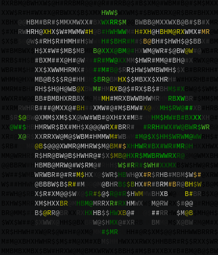

Mis mejores enemigos
Ya luego de un rato aprendiendo desarrollo web y la programacion, he usado varios editores de codigo, no tantos, pero los suficientes para hablar de ellos.
Desde los mas famosos y bonitos para el usuario hasta editores basados en consola, durante estos meses me he dedicado en parte a buscar aquel que seria el editor de codigo que se adapte mejor a mis necesidades, buscando hasta en el rincon mas oculto del internet, he encontrado y probado una gran cantidad de editores de codigo, no tantos como esperaria con lo inconformista que soy, pero creo que dan para una entrada interesante acerca de mi opinion de ellos asi que ire listando todos los que he usado durante un tiempo considerable, empezando por el mas famoso.

Vscode
Por lejos el mas famoso editor de codigo,y no es para menos, siendo que viene de parte de microsoft, es imposible para mi el no aceptar que, objetivamente, es el mejor de todos, tal vez sea algo precipitado pero es que vscode solo tiene cosas buenas, para empezar, contando con el excelente soporte de microsoft, miles de usuarios en multiples foros y con lo amigable interfaz que tiene para el ususario es casi imposible el toparte con algun problema que no se arregle con facilidad, si me esforzase en encontrarle algun problema seria lo pesado que es, pero durante el tiempo que lo use no le encontre ninguna cosa mala, de uso simple e interfaz intuitiva para los novatos pero con alta capacidad de configuracion para los mas expertos, a mi parecer el mejor editor de codigo que hay actualmente.

Sublime text
Liviano, profesional y simple, que mas se puede pedir de este editor de codigo, con sus multiples versiones siempre habra alguna que pueda soportar hasta el equpo mas obsoleto, como lametablemente es mi caso, hasta ahora es el mejor de todos los que he probado, tiene un diseno muy cuidado, la forma tan sofisticada de toda su interfaz para lo liviano que es me parece increible. Tal vez le quede corto para los mas expertos ya que no es tan configurable, el soporte que tiene es limitado pero no deja de ser uno de los mejores ediores que hay y mi favorito que sigo usando actualmente.
Geany
Este editor de codigo venia por defecto con mi distro de linux, de hecho mi historia con linux da para otra interesante entrada, pero al caso, durante un buen rato use geany a modo de block de notas, y no fue hasta luego de llevar un rato en esto que entendi que a parte era un editor de codigo, y vaya editor, lo use en gran parte de mis inicios en la programacion, tan configurable como un software de linux puede ser y de uso simple, geany es en mi opinion un editor de codigo que no tiene nada que envidiarle a sublime text ni a vs code.
Vim
Este editor es por mucho el mas complicado que he probado, principalmente por que no es un editor de codigo, si no que es un programa en el terminal para la manipulacion de archivos de texto en GNU/Linux, es el mas configurable de todos, pero es muy complicado, muchos comandos y archivos que me tomaron varios dias de saber usar, requiere una experiencia considerable en linux y git, pero una vez configurado, puede ser el editor mas liviano de todos, puedes implementarle una interfaz grafica, autocompletados y consejos, no se lo recomendaria a cualquiera, pero sin duda que aquel que tenga la paciencia y los conocimentos, sera recompensado gratamente.
Mencion honorifica: Bluefish
Este editor lo probe un poco menos que los demas, desarrollado para linux, su objetivo es el desarrollo web y se especializa en html, es altamente configurable, algo mas complicado que geany pero de igual forma animo a quien sea a probarlo.
Bueno, como dije, fueron menos de los que esperaba, pero espero que esto algun dia le sirva a alguien que quiera darse una idea de lo que le espera en estos editores. No he estado trabajando tanto en el blog como quisiera, pero ese es un tema que quisiera platicar en otra entrada, pero espero seguir con esto y no dejarlo abandonado, me despido.
-Un chamo.